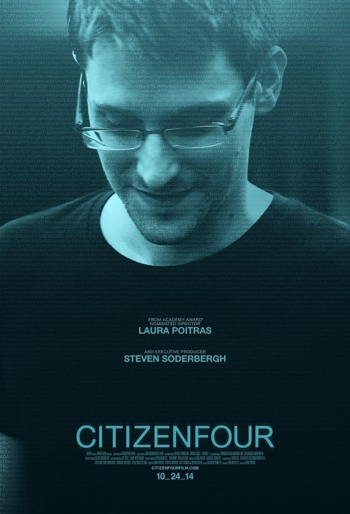
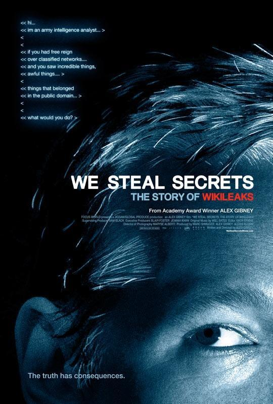

En los documentales presentados en este artículo se pueden ver todo tipo de programadores: algunos son brillantes y crearon la especificación RSS 1.0 a los 14 años, dejando su huella en todo internet, pero murieron jóvenes; otros viven en su propio mundo y se aferran a sus ideales, sin dejar que otros decidan sus pensamientos; otros hacen todo lo posible por salvar la empresa, y su espíritu de nunca rendirse se muestra de manera vívida en las películas; otros arriesgan su vida para revelar verdades poco conocidas...
1. El hijo de Internet (The Internet's Own Boy: The Story of Aaron Swartz)

Introducción de la película:
Swartz participó muy pronto en la elaboración de estándares de internet y a los 14 años participó en la creación de la especificación RSS 1.0. Desde entonces fue miembro del grupo de trabajo central de W3C RDF, diseñó junto con John Gruber el lenguaje de maquetación Markdown (el editor que usa Jianshu incluye Markdown) y participó en muchos otros proyectos. En 2006, Swartz fundó la biblioteca gratuita en línea Open Library, con el objetivo de que cada libro publicado tenga su propia página web ("one web page for every book ever published"). Ya en el año 2000, Swartz había utilizado tecnología wiki para desarrollar el proyecto enciclopédico 'theinfo'. El sistema interno de su empresa también se basaba en wiki. Swartz estudió en la Universidad de Stanford, pero pronto abandonó los estudios para crear la empresa de software Infogami. Aaron Swartz fue también uno de los tres fundadores del sitio de noticias sociales Reddit. A principios de 2006, Infogami se fusionó con Reddit y, a finales de 2006, fue vendida a la editorial Condé Nast. Swartz vendió sus acciones antes de cumplir veinte años. Swartz fundó en 2006, con tecnología wiki, la biblioteca gratuita en línea Open Library, con el objetivo de que cada libro publicado tenga su propia página web ("one web page for every book ever published"). En 2010, Swartz fundó Demand Progress, una organización contraria a la censura en internet. Esta organización movilizaba a la gente mediante correos electrónicos y otros medios para expresar opiniones y presionar a congresistas y otros líderes de opinión en temas específicos. El 19 de julio de 2011, Swartz fue arrestado por robo digital, acusado de descargar 4,8 millones de artículos académicos de MIT y JSTOR. Fue liberado tras pagar una fianza de 100 000 dólares. Swartz usó un disco duro externo y, mediante contacto físico, ejecutó un script desde la red interna del MIT para descargar los artículos de JSTOR. En enero de 2013, se suicidó.
Comentarios destacados:
Poco después del comienzo, dicen que él era una persona que no estaba en buenos términos con el mundo, y el mundo tampoco estaba en buenos términos con él. Inmediatamente pensé en mí mismo y, además, ya había supuesto que podría sufrir depresión. Porque toda persona tan brillante y poco cooperativa con la tradición, o se convierte en leyenda, o se convierte en víctima. Claro, pocos son los que solo experimentan una de las dos; la mayoría reúne ambas o carece de ambas, como Swartz.
2. El gran documental de los juegos independientes (Indie Game: The Movie)

Introducción de la película:
Indie Game: The Movie, el gran documental de los juegos independientes, es un documental sobre ellos que narra las fascinantes historias del pasado de los juegos independientes. Con la llegada del siglo XXI, nació un nuevo tipo de artistas independientes: los desarrolladores de juegos independientes. Tienen conceptos independientes, diseños especiales y juegos con una personalidad muy marcada. Por supuesto, también esperan tener éxito. En la película, el diseñador Edmund McMillen y el programador Tommy Refenes, tras dos años de esfuerzo, esperan el lanzamiento de su primer juego para XBOX, Super Meat Boy. El juego cuenta la historia de un niño vendado que busca a su novia. Y en una feria de videojuegos llamada PAX, el desarrollador Phil Fish presenta muy esperado FEZ, "Fez", un juego en el que había trabajado durante cuatro años. Jonathan Blow, por su parte, está considerando su nuevo juego después de Braid, "Braid". Braid fue en su momento uno de los juegos con mejor puntuación promedio de la historia. Lisanne Pajot y James Swirsky hicieron esta película juntos por primera vez, capturando meticulosamente las luchas de los artistas de los juegos independientes y el viaje emocional de su proceso de expresión artística. Cuatro desarrolladores, tres juegos, un objetivo final: todo esto se expresa a través de este documental.
Comentarios destacados:
Hay personas que también quieren ganar dinero, pero trabajan más guiadas por sus ideales. En nuestra sociedad se les llama idealistas. Esperan que sus obras sean reconocidas, aceptadas y apreciadas, pero si no es así, no pasa nada; crearán según sus propias convicciones y no cambiarán ni un ápice por ello. Se apartan de la sociedad, viven aislados y se sumergen por completo en el mundo que ellos mismos han creado.
3. Code Rush (Code Rush)

Introducción de la película:
Es un documental que cuenta la historia de Netscape y Mozilla. Netscape fue una gran empresa que inventó la etiqueta img, las cookies, el protocolo de seguridad SSL y, por supuesto, el lenguaje estrella de la era HTML5 actual: ¡JavaScript! Pero, por razones conocidas por todos, fracasó. Netscape finalmente liberó el código de su navegador como código abierto; ¡ese nuevo proyecto fue Mozilla! El equipo de filmación cubrió varios momentos importantes del proceso y siguió a los programadores durante un año entero, hasta producir este documental.
Los cineastas independientes siguieron al equipo de Mozilla desde marzo de 1998 hasta abril de 1999; ellos habían desarrollado el código fuente del navegador Netscape y lo habían dado a conocer al mundo, y ahora hacían todo lo posible por salvar la empresa. El resultado fue un momento asombroso en la historia de la informática: se filmó el trabajo de la primera versión beta interna, el momento en que Jamie Zawinski escribió y subió la primera compilación pública, y la reunión general en la que se anunció la adquisición por parte de AOL. Se emitió a nivel nacional en PBS en marzo de 2000, coincidiendo con el comienzo del estallido de la burbuja de internet.
Comentarios destacados:
Con el auge de empresas de internet como Baidu, Tencent, etc., cada vez más personas se dedican a esta industria llena de misterio. Aquí existen mitos de enriquecerse de la noche a la mañana, la gente es joven y moderna, y hace las cosas más geniales del mundo. Esto es emprender en internet.
Silicon Valley es, sin duda, el lugar que lleva la batuta en este campo. Empresas como Google, Facebook y la Universidad de Stanford han hecho de este lugar el punto más alto del mundo en tecnología informática e internet. La gente se asombra, admira e incluso envidia estas vidas e historias de ensueño, y entonces encuentra un documental no muy nuevo: Code Rush. (Hay pocos documentales de TI; quizás esta industria es tan joven que olvidó filmar su retrato de aniversario).
Pocos de los que realmente abren esta película y pasan una hora viéndola terminarán sintiéndose perdidos por el final: no por la gente en la pantalla, sino por ellos mismos. Porque ellos son parte de esa gente. En el instante en que se enciende la cámara, Netscape y sus empleados están tratando de evitar venirse abajo tras ser derrotados por Microsoft. (Sobre la guerra de navegadores entre Netscape y Microsoft, búsquenlo en Baidu). A continuación, la cámara va contando, desde la perspectiva de cada programador, cómo funciona esta industria, la más impresionante y atractiva del mundo: el tipo regordete; el niño que no hace la tarea pero escribe código; el loco que come y duerme frente a la computadora... Todo tipo de esfuerzo, lucha, colaboración y espíritu de nunca rendirse quedan perfectamente reflejados en apenas unas decenas de minutos. "No hemos sido derrotados, estamos haciendo algo que cambiará el mundo. La historia lo atestiguará."
Pero el final de la película gira hacia Wall Street y lo revela todo: todos los sueños de los programadores de hacerse ricos están aquí. Y la codicia y la crueldad de Wall Street son bien conocidas. Debido al pesimismo sobre la posibilidad de que Netscape venciera a Microsoft (contexto: en aquella época, a los emprendedores que buscaban inversión siempre se les preguntaba: "¿A Microsoft le interesaría?"), todos sus esfuerzos y el establecimiento de la comunidad de código abierto de Mozilla no pudieron evitar la ruptura del flujo de fondos ni el hecho de que tuvieron que venderse a AOL. Cuando todos realmente dejan a un lado su trabajo y miran hacia atrás, se dan cuenta de que ya se han acostumbrado a estar lejos de casa, hace mucho que no ven a sus hijos, sus esposas están separadas o incluso divorciadas. Su salud ya no es la misma y su corazón está agotado. Los compañeros de antaño han tomado caminos separados. Cuando el esplendor se disipa, resulta que ellos también son las personas más comunes.
En comparación con todo lo que los medios promocionan, este documental habla más de la crueldad de la industria de TI. Hay que perder para ganar; quizás alguien tan deslumbrante como Mark Zuckerberg carece en la realidad de muchas alegrías comunes. El hombre se vuelve excelente gracias a la soledad. Pasar la noche frente a la pantalla de la computadora es una forma, pero no la única.
El programador del que se habla aquí no es lo mismo que el "mecanógrafo" que teclea código en la actualidad.
4. Las reglas secretas de la vida moderna: los algoritmos (The Secret Rules of Modern Living: Algorithms)

Introducción de la película (no la voy a traducir):
Without us noticing, modern life has been taken over. Algorithms run everything from search engines on the internet, to sat navs and credit card data security - they even help us travel the world, find love and save lives.
Mathematician Professor Marcus du Sautoy demystifies the hidden world of algorithms. By showing us some of the algorithms most essential to our lives, he reveals where these 2,000-year-old problem solvers came from - how they work, what they have achieved and how they are now so advanced they can even programme themselves.
Comentarios destacados:
Resulta que los algoritmos ya están omnipresentes en nuestras vidas: desde la clasificación, los motores de búsqueda, el orden de despegue de los aviones, la elección de rutas, los juegos, los grandes almacenes automáticos… La última parte es el aprendizaje automático, donde la propia máquina descubre algoritmos.
5. Descifradores de códigos: los héroes olvidados de Bletchley Park (Timewatch - Code-Breakers: Bletchley Park's Lost Heroes)

Sinopsis:
¿Sabías que durante la Segunda Guerra Mundial el centro de descifrado británico fue Bletchley Park? La finca está ubicada a 50 millas al norte de Londres, en BLETCHLEY PARK. Por el máximo secreto militar, este nombre nunca apareció en ningún mapa. Bletchley Park permaneció en silencio, pero cambió el mundo entero.
El documental [Centro de descifrado: Bletchley Park] cuenta que durante la Segunda Guerra Mundial, para descifrar el código máximo de la Alemania nazi, el "código Atún", Gran Bretaña estableció una estación de escucha en Bletchley Park. Por un pequeño descuido de las fuerzas alemanas, los descifradores británicos lograron romper el código. Los servicios de inteligencia interceptaron mensajes cifrados entre Hitler, el Führer de la Alemania nazi, y varios de sus altos mandos militares. A partir de entonces, la batalla de Kursk se convirtió en el punto de inflexión de la Segunda Guerra Mundial, y el ejército soviético avanzó hasta tomar Berlín. Los héroes de Bletchley Park acortaron la guerra al menos dos años, salvaron innumerables vidas y lograron una gran victoria.
La película presenta las hazañas de tres genios de la finca. Alan Turing descifró el código Enigma alemán. El 25 de marzo de 2014, el último miembro de aquel equipo de descifrado de Bletchley Park, el capitán Raymond Roberts, figura emblemática del descifrado de códigos de la Segunda Guerra Mundial, falleció a los 93 años. La primera computadora de la historia tampoco salió de manos de los estadounidenses. Dos grandes hombres que contribuyeron de manera sobresaliente al desarrollo mundial de la informática, BILL TUTTE y TOMMY FLOWERS, no comenzaron a dar al mundo la verdad hasta que la información fue desclasificada en las décadas de 1970 y 1980. Entre ellos, BILL TUTTE emigró más tarde a Canadá y trabajó en la UNIVERSITY OF WATERLOO; esa es una de las razones por las que la especialidad de informática de la Universidad de Waterloo es famosa en el mundo.
Críticas destacadas:
1. El operador de cifrado alemán fue perezoso y descuidado, lo que provocó una serie de derrotas; en verdad, un paso en falso y se pierde toda la partida.
2. Un grupo de genios aprovechó un pequeño descuido para cambiar el curso de los acontecimientos; la oportunidad siempre está reservada para quienes están preparados y tienen un sólido conocimiento profesional.
3. Reclutar según el mérito, igualdad para todos; poner a la persona adecuada en el puesto adecuado es el camino correcto. Todos los que defienden la teoría del linaje o del origen de clase terminarán siendo demostrados por la historia como totalmente necios.
6. Google y el cerebro del mundo (Google and the World Brain)

Sinopsis:
Se dice que la humanidad nunca ha abandonado el sueño de la Torre de Babel. En la década de 1930, el célebre escritor de ciencia ficción Wells predijo en "El cerebro del mundo" que, 70 años después, el pionero de la inteligencia, Google, lo haría realidad de manera encubierta. Un proyecto sin precedentes para construir una biblioteca de sabiduría, que pretendía escanear y almacenar todos los libros del mundo, ya se estaba llevando a cabo a toda prisa sin que supiéramos bien de qué se trataba. Durante 12 años, millones de libros han sido víctimas de la infracción de derechos de autor; la imagen de una superinteligencia artificial que se vislumbra detrás del plan provoca a la vez temor y asombro, sospecha e indignación. Una batalla legal de época, ligada al significado del conocimiento y al futuro de la cultura humana, es como un cuchillo que disecciona el dilema del sueño de la civilización. La banal frase cotidiana "déjame googlearlo" se vuelve, desde entonces, complicada y grave.
Críticas destacadas:
En 1938, el escritor de ciencia ficción Herbert George Wells (autor de "La guerra de los mundos" y otras obras) publicó el libro "El cerebro del mundo". En este libro, presentó de manera destacada el concepto de cerebro mundial, relacionado con la construcción de una base de conocimiento a escala mundial. El cerebro mundial reúne el conocimiento de toda la humanidad para que cualquiera pueda consultarlo cuando sea necesario.
Hoy en día, el proyecto Google Books coincide precisamente con la concepción del cerebro mundial de Wells. Este proyecto pretende digitalizar todos los libros del mundo para que los usuarios puedan buscarlos.
Cuando el plan de Google comenzaba a tomar forma, los autores empezaron a contraatacar por cuestiones de derechos de autor. Así que Google tuvo que reducir el proyecto y solo incluir libros sin derechos de autor.
Sin embargo, para algunos tecnólogos, los derechos de autor no eran su principal preocupación. A principios de Google, KK, autor de "Out of Control", planteó una pregunta a los fundadores de la empresa: dado que Internet ya tenía buenos motores de búsqueda en ese momento, ¿por qué Google iba a emprender este negocio? Los fundadores de Google respondieron que estaban haciendo inteligencia artificial.
Ahora parece que Google está haciendo exactamente inteligencia artificial a escala global. Depende de enormes grupos de servidores (capacidad de cómputo), software avanzado (algoritmos) y datos masivos de Internet (también información masiva y conocimiento masivo) para elevar la inteligencia artificial a alturas sin precedentes.
7. El destino de la descarga rápida (Downloaded)

Sinopsis:
Registra el auge y la caída de Napster, el sitio pionero en intercambio de música mediante transmisión P2P. El director Alex Winter aprovecha esto para observar el enorme impacto de la tecnología de redes en la industria musical. Aunque el sitio dejó de funcionar tras las disputas judiciales por derechos de autor con las discográficas, la emergente cruzada por la libertad en la red estaba a punto de desatar una ola de su tiempo.
Críticas destacadas:
Este es un documental sobre Napster. ¿Qué tan increíble era este software? La tecnología P2P que usas ahora tiene su prototipo en él. Incluso la interfaz temprana de iTunes se parecía mucho. A través de la experiencia del auge y la caída de este software, se refleja el impacto de la cultura de intercambio en línea en las industrias tradicionales, especialmente en la industria discográfica. Y también es la primera vez en la historia de la industria discográfica que la tecnología no ayudó a esta industria a ganar dinero, sino que le provocó miedo.
8. Citizenfour (Citizenfour)

Sinopsis:
"Citizenfour" recrea fielmente todo el incidente del escándalo Prism y revela al público la verdadera historia de Edward Snowden, en el centro del torbellino.
La directora del documental, Laura Poitras, fue también una figura central en el escándalo Prism. Fue con la ayuda de ella y del periodista de The Guardian, Glenn Greenwald, que Snowden pudo hacer público el escándalo de vigilancia de la Agencia de Seguridad Nacional (NSA). Poitras y Greenwald ganaron el Premio Pulitzer por ello. El título "Citizenfour" es el seudónimo anónimo que Snowden usó en sus primeros correos con Poitras. En junio de 2013, cuando Poitras voló por primera vez a Hong Kong para reunirse con Snowden, su cámara de video registró de verdad la escena. "Citizenfour" puede recrear fielmente el desarrollo completo del escándalo Prism y revelar al público la verdad sobre Edward Snowden, quien estaba en el centro del huracán.
Resulta que Snowden, antes de que se revelara su identidad, había estado en contacto anónimo con la directora de esta película, Laura Poitras, y con el periodista de The Guardian. Así que la película, desde el primer correo electrónico, pasando por la primera noticia, hasta la revelación de su identidad, muestra que él tomó una decisión enorme para que hubiera más voces. Nadie sabía qué pasaría al día siguiente o incluso a la hora siguiente, pero la película lo trata con una ligereza que parece simplemente mostrar varios días de su vida cotidiana. Demasiado valiente.
Críticas destacadas:
Resulta que Snowden, antes de que se revelara su identidad, había estado en contacto anónimo con la directora de esta película, Laura Poitras, y con el periodista de The Guardian. Así que la película, desde el primer correo electrónico, pasando por la primera noticia, hasta la revelación de su identidad, muestra que él tomó una decisión enorme para que hubiera más voces. Nadie sabía qué pasaría al día siguiente o incluso a la hora siguiente, pero la película lo trata con una ligereza que parece simplemente mostrar varios días de su vida cotidiana. Demasiado valiente.
9. Robamos secretos: la historia de WikiLeaks (We Steal Secrets: The Story of WikiLeaks)

Sinopsis:
El documental describe con gran interés, desde múltiples niveles, la transparencia de la era de la información y nuestra búsqueda incansable de la verdad. La película detalla el nacimiento de WikiLeaks, de Julian Assange, un sitio que contribuyó a la mayor brecha de seguridad en la historia de Estados Unidos. La película describe el ascenso y la caída de este misterioso sitio, entremezclado con el caso de la filtración de Bradley Manning, un soldado del ejército estadounidense, un soldado de alto coeficiente intelectual e inquietante que descargó cientos de miles de documentos de los servidores militares y diplomáticos de Estados Unidos.
Críticas destacadas:
Mejor guion documental de 2013. Ofrece una exposición multifacética que permite al espectador juzgar por sí mismo. Las múltiples facetas y la complejidad de Assange como hacker idealista son una interesante presentación de la naturaleza humana en un soporte especial y novedoso.
10. The Pirate Bay en la vida real (TPB AFK: The Pirate Bay Away from Keyboard)

Sinopsis:
A principios del siglo XXI, un sitio web que pregonaba "lograr la verdadera libertad de expresión y difusión cultural" apareció de la nada. Era The Pirate Bay, el sitio de intercambio de archivos más grande y, más tarde, famoso y muy controvertido. El sitio fue fundado por tres suecos: Gottfrid Svartholm Warg, Fredrik Neij y Peter Sunde. Su espíritu y coraje recibieron un cálido apoyo de los partidarios de la copia (Partido Pirata) de todo el mundo, y al mismo tiempo atrajeron el odio de los titulares de derechos de autor, que afirmaban pérdidas de hasta 6.100 millones de dólares. En 2008, los gigantes liderados por Hollywood presentaron una demanda contra The Pirate Bay, y los tres fundadores tuvieron que "alejarse del teclado" y entablar una serie de maniobras con los fiscales.
Un bando usa la ley como medio; el otro, la tecnología como arma. Esto no es solo una guerra entre diferentes campos de valores.
Críticas destacadas:
Siempre he considerado que The Pirate Bay es un milagro: bajo tanta presión por parte de los estadounidenses y del gobierno sueco, sigue en pie y hasta hoy se puede acceder y descargar.
La película, en forma de documental, narra todo el proceso de los tres fundadores de The Pirate Bay como acusados. Aunque el punto de vista de la película está básicamente del lado de los acusados, aún se puede ver el impacto de la disputa por los derechos de autor en la sociedad moderna.
El título AFK es un término geek, y la película también lleva al público a echar un vistazo a la vida de los geeks en el mundo real. El final, con todos ellos en prisión, produce gran pesar.
Fuente: Jianshu
Autor: Jaky_Zhan
Enlace: http://www.jianshu.com/p/2dd54ec0bb43